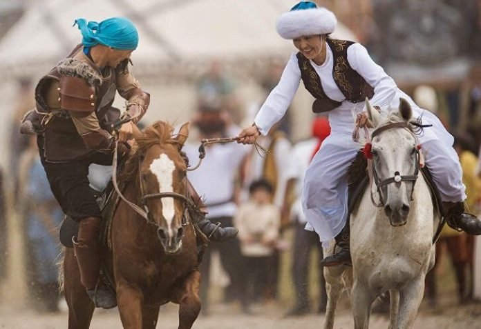

Türk ulusunun boyları her yerde olduğu gibi Kaşgarlı Mahmut'un Divanı Lügatıt Türk esrinde de bahsedilmiştir. Türk boylarını teker teker açıklayan Kaşgarlı Mahmut eserinde boyları şu şekilde anlatmıştır: “Türkler aslında yirmi boydur. Bunların hepsinin kökeni Hz. Nuh'un oğlu Yafes’in oğlu Türk’e dayanır. Hz. İbrahim’in oğlu İshak’ın oğlu İsu, oğlu Rum nesebindendir.
Her bir boyun birçok oymağı vardır ki, sayısını ancak Allah bilir. Ben bunlardan ana boyları saydım. Oymaklardan ise Oğuz Türkmenleri dışındakileri bıraktım. Oğuzların oymaklarına ve hayvanlarına vurulan damgaları ise insanların onları tanımaları gerektiği için yer vereceğim. İslam öncesi ve İslam sonrası dönem ayrımı yapmaksızın, Rum topraklarına akın bölgelerden doğuya doğru sırasıyla doğudaki Oğuz boylarının yerleşme yerlerini yazdım.
Rum ülkesine en yakın olan boy Beçenek’tir. Sonra Kıpçak, Oğuz, Yemek, Başgırt, Basın, Kay, Yapaku, Tatar, Kırgız gelir. Kırgızlar, Şin ülkesine yakındırlar. Bu boyların hepsi Rum topraklarından doğuya uzayıp giderler. Sonra da şu boylar gelir: Çiğil, Tuğsu, Yağma, Öğrak, Çaruk, Çömül, Uygur, Tamut, Hıtay. Ki bu sonuncusunun yerleşme yeri Şin’dir. Bundan sonra Tawgaç gelir ki bu boyun yerleşme yeri de Maşin’dir. Bu boylar güney ile kuzey arasında bulunurlar.”